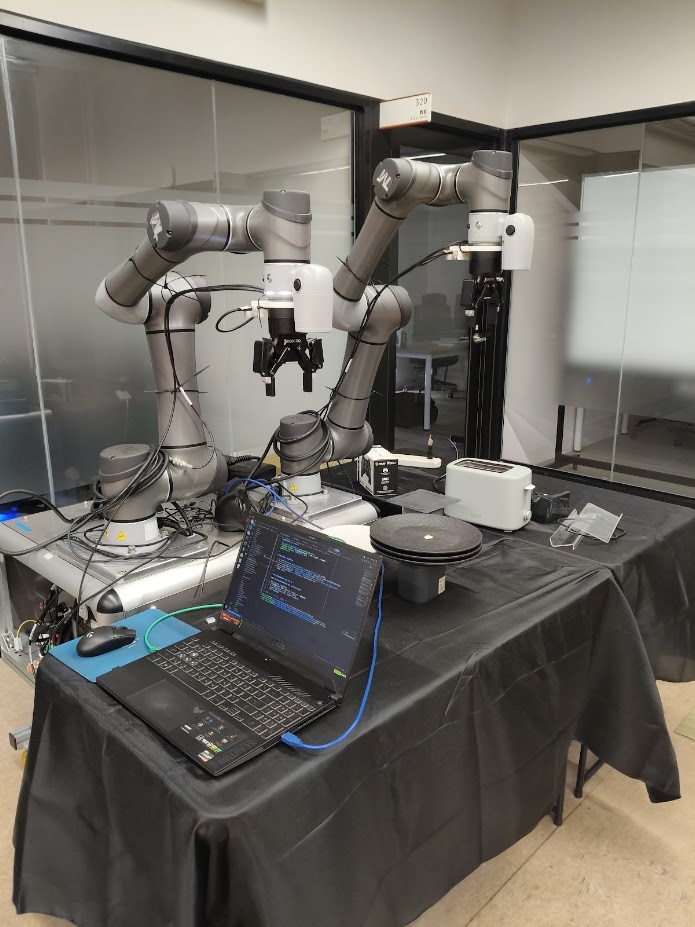
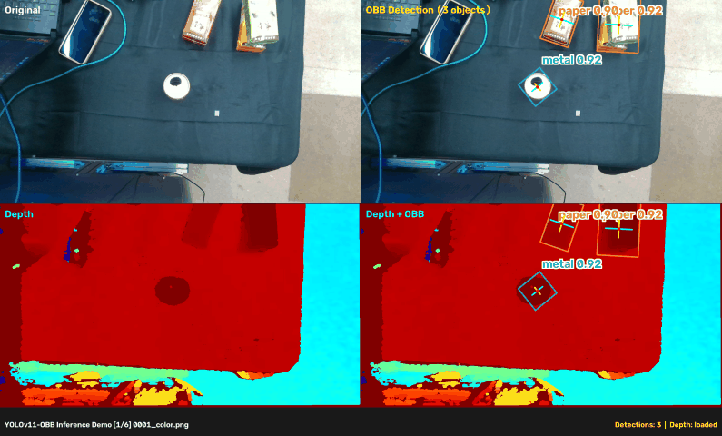
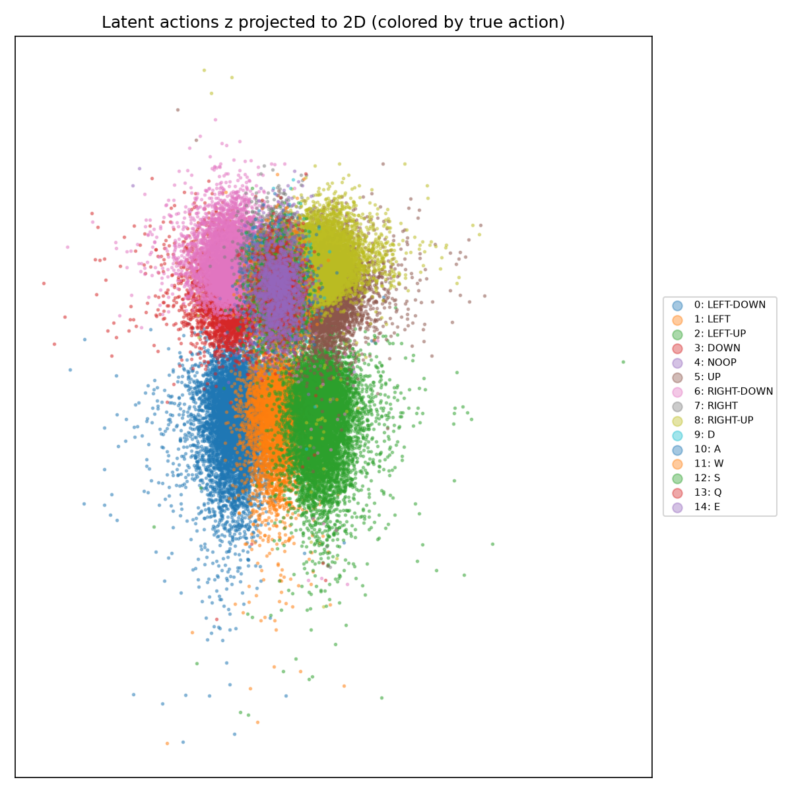
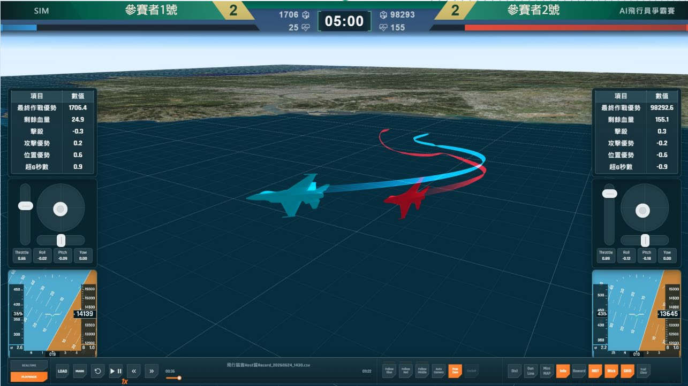
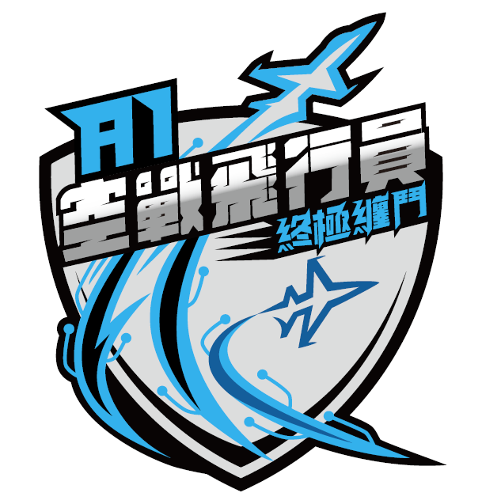

從無標籤時序中，IDM 依據相鄰影像特徵位移提煉向量 $z$，世界模型以未來預測驗證真實驅動力。
策略網路在隱空間學習戰術走位：看到障礙物時輸出向右繞行群向量 $z$，完全與實體舵面解耦。
僅需數千步少量真實航測遙測數據，訓練微型解碼器將向量 $z$ 翻譯為特定載具的實體舵面或電機指令。
實驗室工作站實機運行成果 ｜ 完全無按鍵標註下，128 維空間自然依照物理動作聚類

1v1 視距內空戰纏鬥（BFM） ｜ 官方即時對抗系統儀表 ＆ 競賽規格簡介


官方 3.14 億步 SAC 模型缺陷 ｜ 結合切換控制、PFSP 對手池與 LAM 意圖增廣
敵機直線_v2），未見過防禦規避對手，策略退化為固定半徑水平盤旋
實驗室工作站 ｜ 輔助文獻閱讀、代碼編程與實驗室知識庫查詢
opencode，協助代碼審閱、快速除錯與編寫腳本
校內直連 http://140.116.202.73:3000 ｜ 請連接學校網路使用（請勿使用手機行動網路）
雙神經網路互斥約束機制：IDM 負責從狀態變化猜測潛在動作 $z_t$，FDM（前向世界模型）以「未來重構預測 Loss」倒逼動作必須具備真實物理驅動力。
將高階戰術思考與底層特定舵面完全解耦：在無人標註時序下，直接模仿專家意圖，並在低維平滑的動作流形上進行高效強化學習。
只需數千步（5~10 分鐘）真實遙測數據，訓練極輕量的微型映射解碼器，即可將抽象動作向量 $z$ 快速接地到特定載具的實體控制指令。